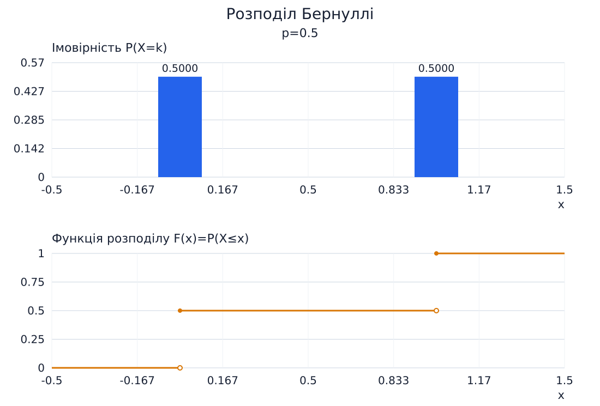
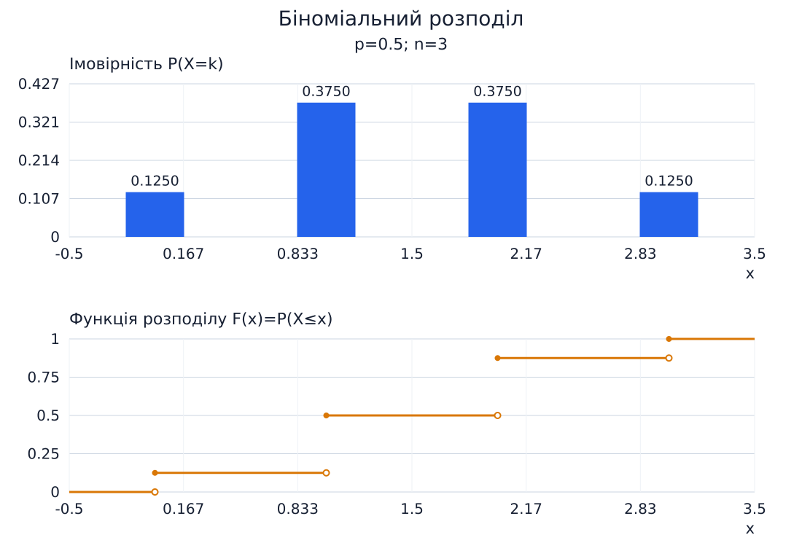
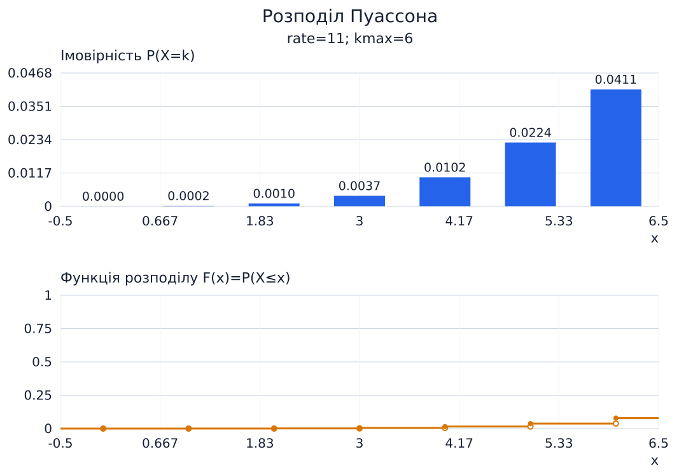
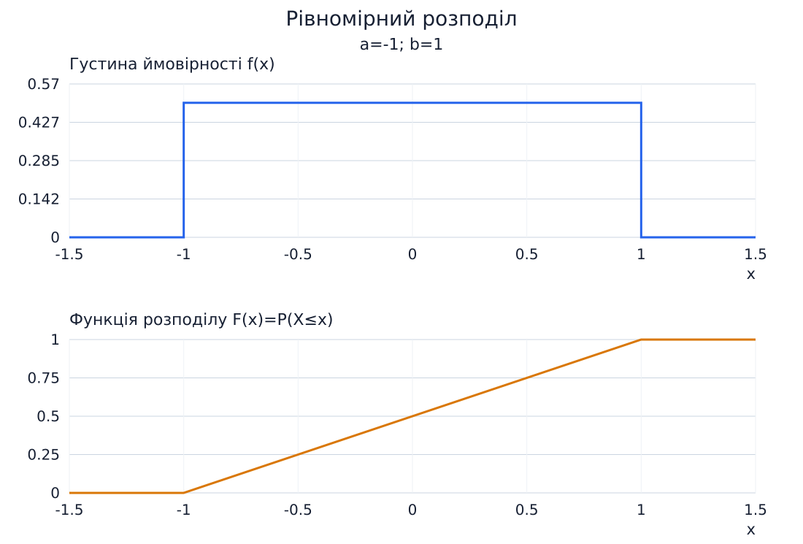
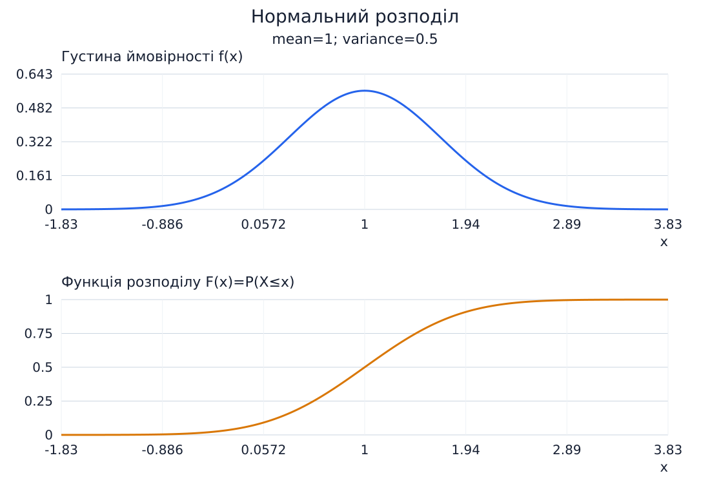
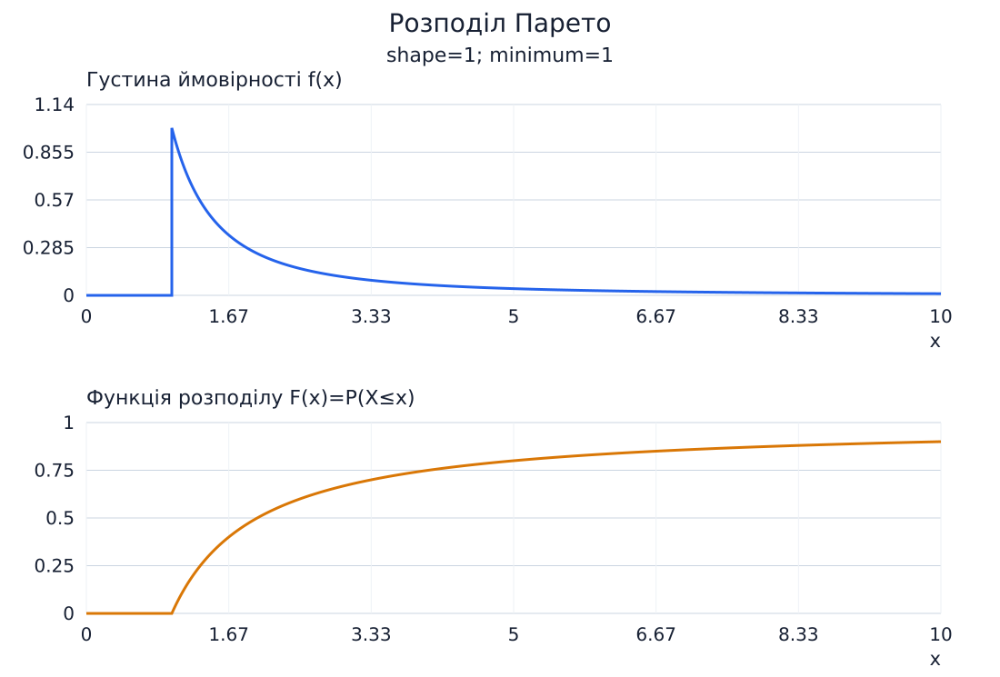
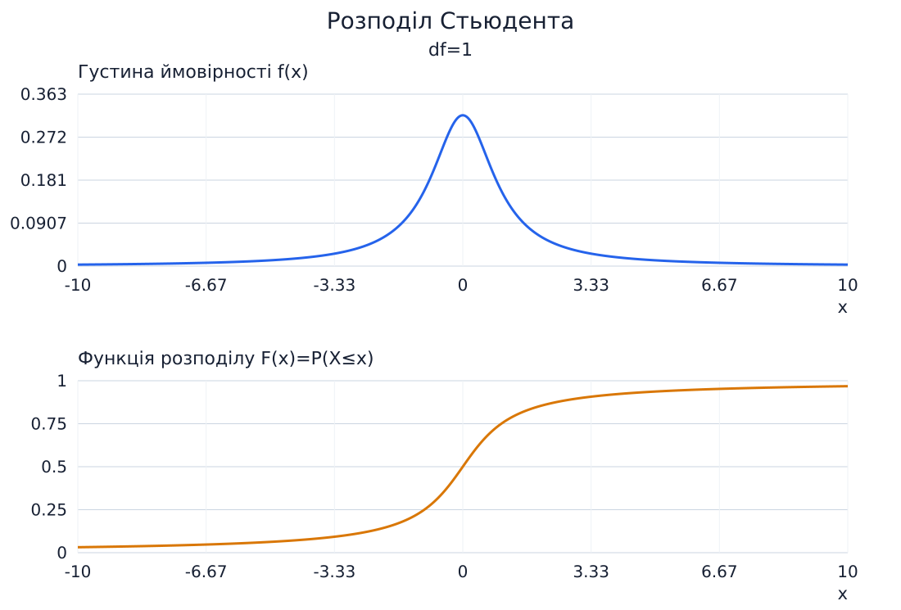
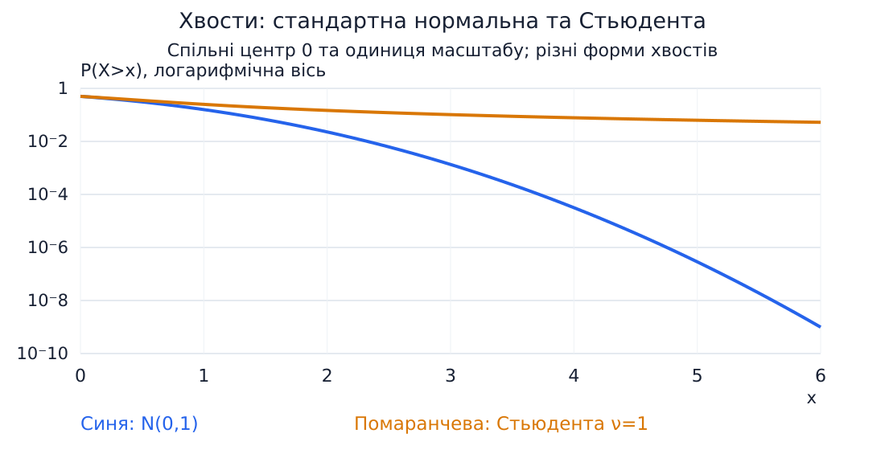

Розподіли випадкових величин
Біжик Юрій Володимирович · ФЕІ-34с · N=1
Теоретичні PMF/PDF і CDF; випадкові вибірки не генеруються.

Рисунок 1 — Розподіл Бернуллі: PMF/PDF та CDF

Рисунок 2 — Біноміальний розподіл: PMF/PDF та CDF

Рисунок 3 — Розподіл Пуассона: PMF/PDF та CDF

Рисунок 4 — Рівномірний розподіл: PMF/PDF та CDF

Рисунок 5 — Нормальний розподіл: PMF/PDF та CDF

Рисунок 6 — Розподіл Парето: PMF/PDF та CDF

Рисунок 7 — Розподіл Стьюдента: PMF/PDF та CDF

Рисунок 8 — Порівняння правих хвостів
Розподіл Пуассона зображений лише до заданого kmax без перенормування. У Парето α=1 сподівання нескінченне, у Стьюдента ν=1 воно не існує.